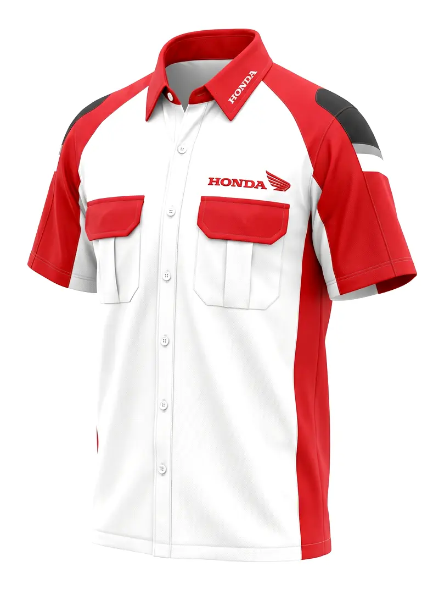

Kemeja seragam kantor korporat — produksi PT Karmeda dengan bordir logo dan bahan Taipan Tropical
Kemeja seragam kantor adalah wajah profesionalisme perusahaan Anda. Saat karyawan bertemu klien, menghadiri rapat, atau mewakili perusahaan di acara eksternal, kemeja seragam yang baik menyampaikan pesan yang kuat tentang identitas dan standar perusahaan.
Panduan ini membahas semua yang perlu Anda ketahui tentang kemeja seragam kantor — dari pemilihan bahan, model dan detail desain, teknik aplikasi logo, hingga estimasi harga dan cara memesan.
Kemeja resmi dengan atribut lengkap — bordir nama, logo instansi/perusahaan, dan kadang pangkat atau jabatan. Digunakan oleh instansi pemerintah, BUMN, dan perusahaan swasta yang memiliki budaya formal.
Kemeja formal dengan logo perusahaan, tanpa atribut jabatan. Cocok untuk perusahaan swasta dengan dress code formal-profesional. Tersedia lengan panjang dan pendek.
Kemeja dengan bahan ringan dan model yang sedikit lebih kasual dari kemeja formal. Populer di perusahaan dengan budaya kerja semi-formal, terutama yang beroperasi di lingkungan panas.
Kemeja batik dengan motif custom sesuai identitas brand perusahaan. Wajib digunakan di banyak perusahaan pada hari Jumat atau acara khusus.
| Bahan | Karakteristik | Cocok Untuk | Harga/Pcs |
|---|---|---|---|
| American Drill | Ringan, anti-kusut, terjangkau | Seragam harian semua level | Rp 135.000–165.000 |
| Taipan Tropical | Sangat ringan, elegan, adem | Front office, staf marketing | Rp 165.000–210.000 |
| Woolpeach | Premium, lembut, draping bagus | Manajemen, direksi | Rp 210.000–280.000 |
| Katun Primissima | Nyaman, menyerap keringat | Kemeja batik seragam | Rp 150.000–250.000 |


Contoh kemeja seragam korporat — berbagai klien industri otomotif di Tangerang dan Jakarta
Mockup digital gratis · Sample fisik sebelum produksi · Bordir logo termasuk · MOQ 50 pcs
Teknik paling umum dan paling tahan lama. Logo dijahit langsung ke bahan menggunakan benang warna. Hasil rapi dan profesional, tahan puluhan kali cuci. Biaya tambahan Rp 15.000–Rp 50.000 per titik.
Mencetak desain full-color ke film khusus lalu di-press ke kain. Cocok untuk logo dengan detail warna kompleks yang sulit dibordir. Lebih terjangkau untuk logo kecil tapi kurang tahan lama dibanding bordir.
Logo dibordir ke kain terpisah lalu dijahit atau di-velcro ke kemeja. Fleksibel — patch bisa diganti jika perusahaan rebranding. Umum digunakan untuk kemeja taktis dan PDL.
Harga belum termasuk bordir logo (tambah Rp 15.000–Rp 25.000/pcs untuk bordir standar).
PT Karmeda melayani pembuatan kemeja seragam kantor custom untuk perusahaan di Tangerang dan seluruh Indonesia. Tim desain kami membantu dari pemilihan bahan, mockup digital, hingga approval sample sebelum produksi massal.
Mockup digital gratis, sample fisik sebelum produksi, bordir logo termasuk.